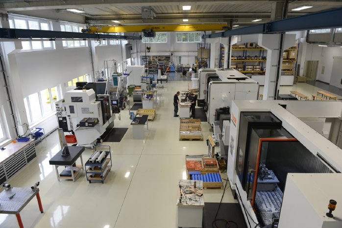

Semestre à Berlin & Stage CNC
Une année de double immersion : linguistique à Berlin et industrielle chez Promess Fertigung GmbH. Une expérience qui m'a ouvert à d'autres façons de concevoir et fabriquer, loin de la précision horlogère suisse.
Réalisations de cette période

Stage Opérateur Machines CNC
Lors de mon stage de quatre mois chez Promess Fertigung GmbH à Berlin, j'ai acquis une expérience pratique significative dans le département de l'usinage. Mes responsabilités comprenaient la mise en marche et l'opération de rainureuses et de centres d'usinage CNC, ainsi que la gestion de la réception et de l'expédition des marchandises.
Ce stage m'a permis de découvrir la production industrielle allemande de l'intérieur — avec ses standards de qualité, son organisation rigoureuse et son approche pragmatique de la fabrication en série. Une culture de travail différente qui m'a beaucoup appris.
En parallèle, le semestre berlinois a renforcé mon niveau d'allemand jusqu'au B2, niveau que j'ai ensuite maintenu grâce au cursus bilingue de la HEIA-FR.
Compétences acquises
Opération de centres CNC
Rainureuses et fraiseuses en production
Contrôle qualité pièces usinées
Vérification dimensionnelle et conformité
Gestion logistique
Réception, expédition, suivi des stocks
Allemand professionnel (B2)
Immersion totale en environnement germanophone